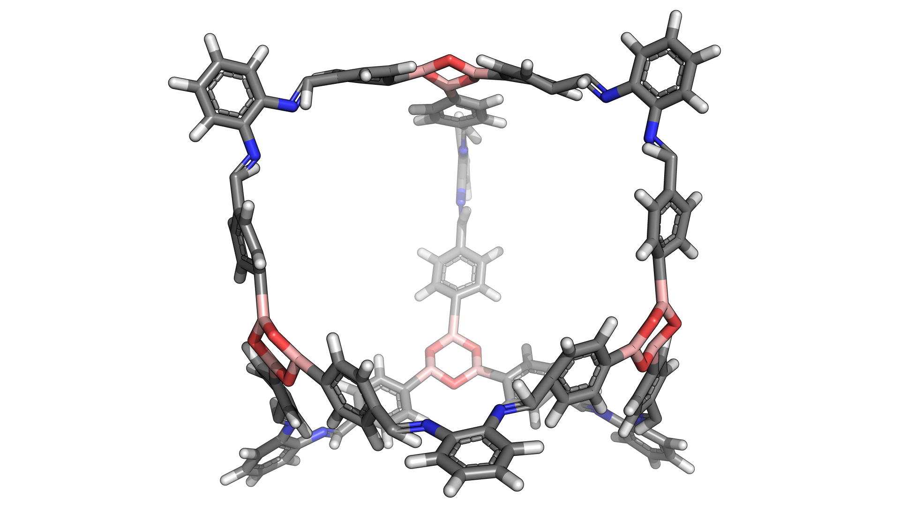
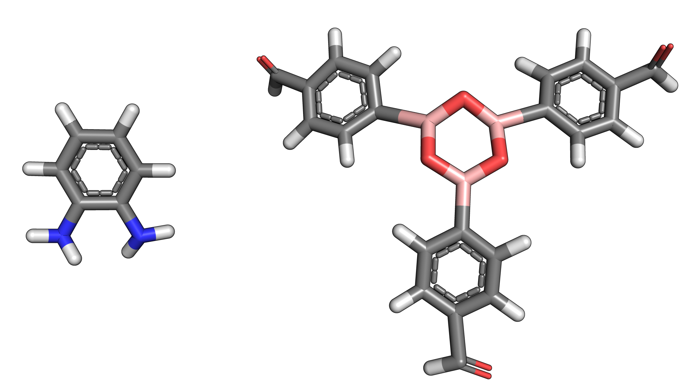
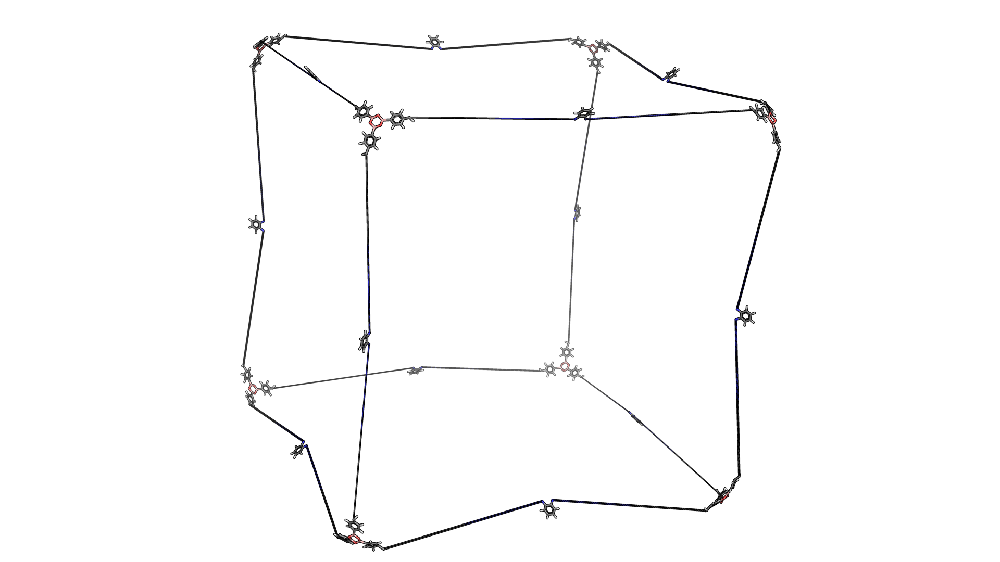

Welcome to mtk’s documentation!¶
Overview¶
mtk is a Python 3 library for building, manipulating, optimizing
and designing molecules.
Basic Examples¶
Linear Polymer¶
The core function of mtk is to assemble molecules. Here is an example
of how a simple, linear polymer can be built. Starting with three monomers,
such as

each can be loaded into a StructUnit2 object from a molecular
structure file:
monomer1 = StructUnit2('monomer1.mol', 'bromine')
monomer2 = StructUnit2('monomer2.mol', 'bromine')
monomer3 = StructUnit2('monomer3.mol', 'bromine')
The first argument is the path to the structure file and the second argument specifies the functional group of the monomer.
To assemble a polymer only a single line of code is required:
polymer = Polymer([monomer1, monomer2, monomer3], Linear('ABC', [1, -1, 0], n=3))
Simply create a Polymer object by giving it a list of
monomers and a topology object, in this
case Linear. The topology object defines the the structure of
the polymer being assembled. The repeating unit is 'ABC', the orientation
of the each monomer along the chain is parallel, anti-parallel and random, respectively, and
the number of repeating units is 3.
The assembled polymer can be written to a file
polymer.write('polymer.mol')
and will look like this.

Notice that the functional group has disappeared and been replaced by
new bonds between the monomers. The new bonds seem a little stretched,
so we can optimize the structure using an optimization function defined in
optimization, in this case rdkit_ETKDG()
rdkit_ETKDG(polymer)
Again, the polymer can be written to a file
polymer.write('polymer_opt.mol')
and viewed

Molecular Cages¶
Molecular cages are relatively exotic molecules that look like, yes, cages. Here is an example:
Despite their apparent complexity, assembling a molecular cage is extremely straightforward. In fact, it is done in exactly the same way as a polymer.
First we define the building blocks of the cage:
bb1 = StructUnit2('bb1.mol', 'amine')
bb2 = StructUnit3('bb2.mol', 'aldehyde')
Here is what they look like:
Notice a slight difference, while the first building building block still
uses the class StructUnit2, the second uses the class
StructUnit3. The reason is that the first building block has
2 functional groups while the second has 3 functional groups. Each class
defines a slightly different set of operations for manipulating the
positions of the building blocks when assembling the cage. This is
important so that the building blocks are placed exactly how we want them
when constructing a molecule. However, all of this happens behind the scenes
and a cage can be constructed through a simple one-liner:
cage = Cage([bb1, bb2], FourPlusSix())
Notice that this is exactly the same as the polymer example. To generate
a cage, we simply create a Cage object. We initialize it with
a list of building blocks and provide a topology instance, in this case
FourPlusSix. Unlike the Linear class, the FourPlusSix
does not require any additional arguments. Our assembled cage looks like
this

If we want to create a cage with a different topology but using the same building blocks, we provide a different topology instance:
cage2 = Cage([bb1, bb2], EightPlusTwelve())
The assembled cage looks like a cube:
Notice that the building blocks are the same, only the shape has changed. This is because a different topology instance was provided during initialization.
Here is a third example:
cage3 = Cage([bb1, bb2], Dodecahedron())
While we assembled some cages, the constructed structures are not particularly realistic. We can optimize the geometry using an optimization function:
macromodel_opt(cage, '/opt/schrodinger2017-4')
macromodel_opt(cage2, '/opt/schrodinger2017-4')
macromodel_opt(cage3, '/opt/schrodinger2017-4')

In this case the function macromodel_opt() was used. We could have
used rdkit_ETKDG() again but chances are the structures would
have been optimized quite poorly. The macromodel_opt() function
requires a valid MacroModel installation with a working license.
The argument '/opt/schrodinger2017-4' is the path to the installation.
Covalent Organic Frameworks¶
Other Materials¶
mtk is a work in progress and currently supports only the above classes
of materials out of the box. However, mtk was designed to be easy
extend to other classes of molecules.
For a guide on how this can be done
see, .
Other Features¶
Calculating Molecular Properties¶
Geometric Manipulations¶
Dealing with Multiple Molecules¶
Automated Molecular Design with Genetic Algorithms¶
Extending mtk¶
Each module of mtk has its own guidelines for adding new functionality.
However, in almost all cases adding new features to mtk only involves
defining a simple function in the appropriate module or a method in the
appropriate class.
- Extending mtk: Adding new macromolecules.
- Extending mtk: Adding new topologies.
- Extending mtk: Adding more functional groups.
- Extending mtk: Adding more energy functions.
- Extending mtk: Adding mutation functions.
- Extending mtk: Adding crossover functions.
- Extending mtk: Adding fitness functions.
- Extending mtk: Adding normalization functions.
- Extending mtk: Adding selection functions.
- Extending mtk: Adding exit functions.